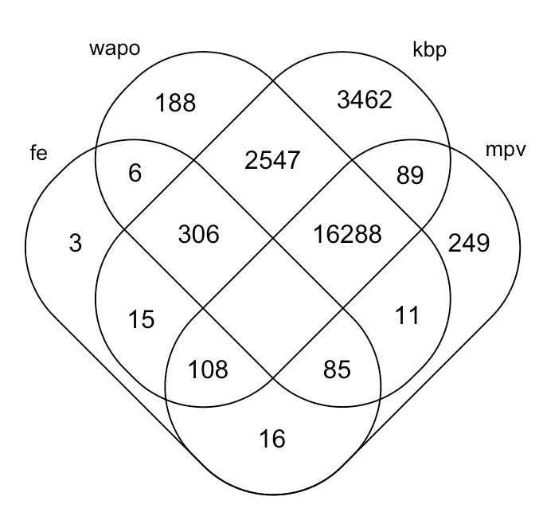

Fatal Police Violence
For the past year I've been working with Martina Morris on analyzing data on fatal police violence. Despite the fact that over 300 people have been shot and killed by police since the beginning of 2019, there is no central repository or offical goverment reporting of police using fatal force. Despite this, communities have stepped forward to crowdsource data on police violence.
In the context of my research with Dr. Morris we've looked at four major there are 4 major datasets.
- Fatal Encounters
- Killed By Police
- Mapping Police Violence
- The Washington Post
The first two (Fatal Encounter and Killed By Police) seem to be original sources. The other two (Mapping Police Violence and The Washington Post) claim to draw their data from multiple sources, including Fatal Encounters and Killed By Police. It was of keen interest to my research group to understand how individuals are distributed through these data sets both because we want to better understand where the data are actually coming from and because we want to impute any values that are present in one dataset but missing in another. However, the datasets are all very inconsistent. They each use totally different formatting, encodings, and span different periods of time.
To make a year-long story short, I merged the four datasets into one unified dataset. I presented my results at the 2019 Undergraduate Research Symposium, but hadn't done much in the way of visualization. I was primarily interested in two questions:
- How does fatal police force vary through space, time, and race?
- What's the distribution of fatal force recipients through the four crowdsourced datasets we have available?
Storyboarding
To answer those questions, I imagined a chloropleth with various sliders that would change which particular rows would be dispalyed. I pictured the data as a histogram where the bars could be selected to indicated which parts of the data you're interested in.
I also pictured a dynamic Venn diagram which would also update with the sliders. This would be a great first step towards answer both of my principle question.
